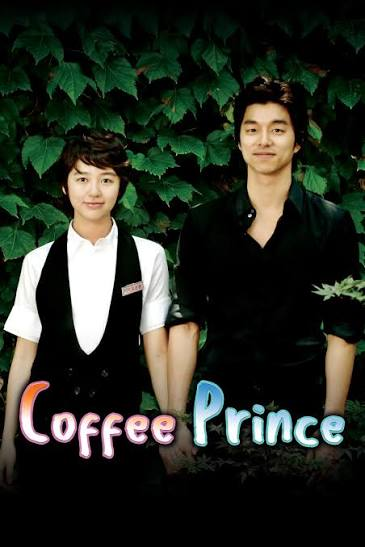
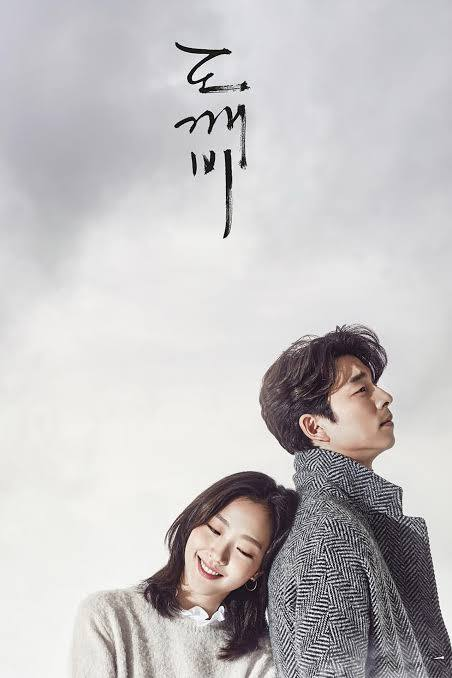
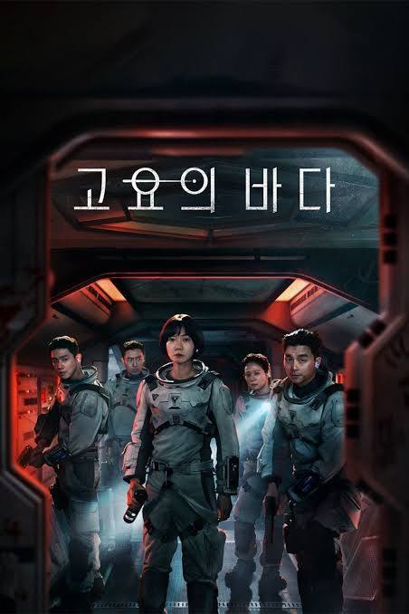
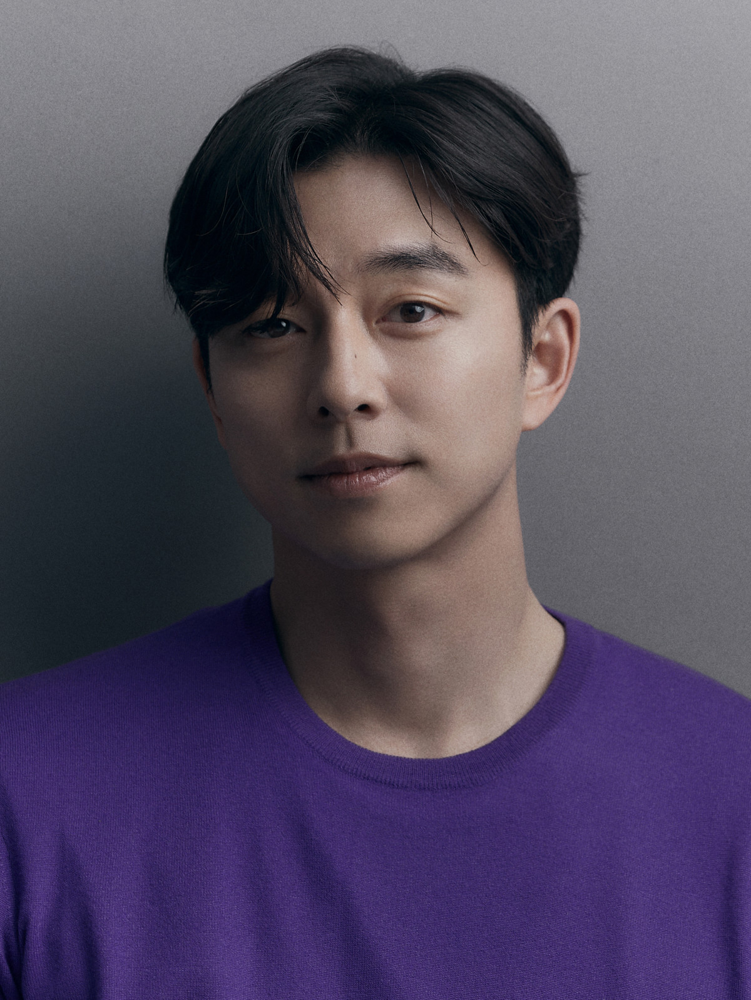

Notable Works

Coffee Prince
2007 • Drama

Train to Busan
2016 • Film

Goblin
2016 • Drama

The Silent Sea
2021 • Series

Squid Game
2021 • Series

Celebrating the career and works of one of South Korea's most beloved actors.
Explore His StoryGong Yoo is a South Korean actor known for his versatile performances across television dramas and films.
He gained widespread recognition through popular dramas such as Coffee Prince and Guardian: The Lonely and Great God, commonly known as Goblin.
His film career includes critically acclaimed productions such as Train to Busan and The Age of Shadows.
Beyond his acting career, Gong Yoo is admired by fans for his charismatic screen presence, versatility and thoughtful approach to his work.

2007 • Drama
2016 • Film

2016 • Drama

2021 • Series
2021 • Series
He has taken on a wide range of characters across different genres.
His screen presence makes his characters memorable and engaging.
His performances often portray emotions that audiences can connect with.
His long-lasting career demonstrates his dedication to acting and storytelling.
Years in the entertainment industry
Film and television roles
International recognition
Beloved by fans worldwide
Click the button below to discover a fun fact!